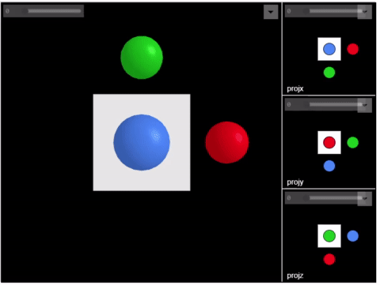

© Microsoft 2021
Primary Contact: scenepic@microsoft.com
Introduction
All platforms have good support for 2D images, with well-recognized formats such as PNG and JPEG that can be viewed out of the box (no installation) and shared trivially.
However, while many formats exist for 3D data, none are well-supported without installation of tools such as MeshLab, Blender, etc.
ScenePic was created for 3D computer vision researchers such as those working on HoloLens and Mesh at Microsoft. It was designed to be a lightweight, reuseable 3D visualization library, with the following desiderata in mind:
- Make experimentation with 3D data near effortless
- Incredibly easy to create and share 3D results
- zero-install sharing of detailed 3D results using HTML
- based on modern web standards so usable with any modern browser (tested in Edge, FireFox and Chrome)
- embeddable in other HTML documents
- Performant
- based on WebGL
- High quality visuals
- Works both offline or interactively in client-server setup
- Simple, clean API
- friendly Python front-end
- basic mesh json file format
- other language front ends easy to add
An example render:

Here is an animation of the Getting Started tutorial ( Python C++ ):
Overview
The core ScenePic library is written in TypeScript and based on WebGL. This is compiled down to dist/scenepic.min.js which is a 'minified' JavaScript library that can be loaded in HTML pages to enable ScenePic to display data.
The core API for ScenePic is a JSON-based scripting file format. The simplified architecture diagram below illustrates how these scripts are used to define a Scene which is the top-level object in ScenePic. A Scene can contain multiple Canvas*es (3D drawing canvases), *Image*s, and *TextPanel*s. Each *Canvas can contain multiple Frame*s. *Frame*s comprise multiple *Mesh*es, and *Mesh*es can be reused across different *Frame*s and *Canvas*es. *Mesh*es are basically triangle meshes, comprising flat vertex and triangle buffers. Each *Mesh has an optional Image associated for texturing purposes. *Image*s can also be displayed as flat 2D *Displayed Image*s.

However, most users will not need interact with ScenePic's core API and scripting language directly. Instead they will use one of the client-language front end libraries to easily generate ScenePic JSON scripts. Currently supported are:
C++
ScenePic is fully compatible with Cmake FetchContent, and we encourage users to include the library in their projects via that mechanism. Alternatively, you can follow the instructions below to build the client library directly.
Python
As the Python interface is provided via a wrapper around the C++ interface, users can clone the repository and follow most of the instructions to build the c++ client library, but then run
which will then build and install the scenepic Python wheel. Alternatively, pre-built wheels are available on [PyPi]()
Expected Usage
The main branch of the ScenePic git repository will be kept up-to-date with the latest version. We highly recommend, where possible, using the binary builds we provide. That said, the library is FetchContent compatible, and can be easily included into C++ projects where desired.
Getting Started with Python
Please follow the instructions above to either create a custom build of the library or, preferably, to install one of our pre-built binary wheels.
For a quick tutorial, take a look at getting_started.py.
For a more extensive tutorial, install Python and Jupyter, and open the python_examples/tutorial.ipynb notebook. This tutorial also demonstrates the use of ScenePic within the interactive Jupyter notebook environment.
A similar example is given in python_examples/getting_started.ipynb.
Note: you may need to set the NotebookApp.iopub_data_rate_limit setting in jupyter to prevent an IOPub error. To do this, call jupyter notebook --generate-config to generate a config file, and then edit the appropriate line to increase the value until it works.
We provide a website with full Python API documentation here
Getting started with C++
To see examples of how to use the library from C++ look at the tutorial. You can find the API documentation here
Using the HTML Client

A ScenePic HTML page will look something like the image above. This example shows four Canvas objects, each of which contains several Frame objects (refering under the hood to a set of Mesh objects).
The UI supports standard 3D mouse controls (drag to rotate, shift-drag to translate in xy, mousewheel to translate in z) to move the viewport camera. On touch screens: single finger to rotate, two fingers to translate in xyz. You can slow any of the mouse controls by holding down the Alt key. If you accidentally transform the camera too wildly, you can reset by pressing 'r'.
In the top right of each canvas a Layer control will appear. This allows the user to toggle certain layers of meshes on and off interactively.
Each Frame for a 3D canvas has an associated Focus Point - a 3D location about which the camera rotates. You can view the Focus Point by holding down the '`‘’ (backtick) key, and while holding this down it can be translated using the mouse. If you press 'l' then the camera is 'locked' to the focus point in xy, though you can still rotate and translate in z. Locking to the focus point is particularly useful to center useful content in animations where the focus point can be different in each frame. You can also toggle the camera automatically orbiting the focus point by pressing '\'.
For Scene objects that contain many frames, you can control animation by pressing the spacebar to play/pause or by using the playback control widget. You can also use the scrollbar to select different frames.
You can programmatically link all input events across multiple *Canvas*es by using scenepic.py/Scene/link_canvas_events().
Building ScenePic core library from source
The core library portion of ScenePic is written in TypeScript which needs compiling to JavaScript.
Pre-requisites (install in order)
- Node.js (JavaScript outside the browser)
Install node_module dependencies locally
From repository root folder: >
npm install
Build
Run commands from root folder. Builds output to the dist folder.
- Build: compiles the typescript, packages all dependencies, and minifies. >
npm run build
C++ Client Build How-To
In order to build the C++ client from source you will need to first install a few dependencies:
Doxygen (optional)
If you want to build the documentation, you will need to download and install Doxygen. You can download and install the latest version of doxygen here
If you are on Ubuntu and want to build the documentation, you should run:
(or equivalent, e.g. brew install doxygen on Mac) to install the Doxygen documentation creation tool.
CMake
The C++ build makes use of the CMake cross-platform build system. You can find instructions on how to set up CMake for your platform here. CMake is a meta-build system, which will create a platform-appropriate build setup based upon the files which we have provided in the project (e.g. makefiles for *nix, Visual Studio project files for Windows). We require a minimum version of 3.15. We also require a C++ 14 compliant toolchain. One CMake is installed you should navigate to the cloned repository and run the following commands:
CMake will attempt to find the dependencies on your system, and will tell you if it is unable to find something, in which case you can manually point it at the correct location. You may find it easier to use a visual CMake configuration editor (CMake GUI ships with the Windows distributable, and there is CMake Curses for *nix) to customize the build, for example by disabling the documentation or Python build subsystems. Once you have successfully built the library, you can run the tests in the following fashion from the build directory:
Contributing
This project welcomes contributions and suggestions. Most contributions require you to agree to a Contributor License Agreement (CLA) declaring that you have the right to, and actually do, grant us the rights to use your contribution. For details, visit https://cla.opensource.microsoft.com.
When you submit a pull request, a CLA bot will automatically determine whether you need to provide a CLA and decorate the PR appropriately (e.g., status check, comment). Simply follow the instructions provided by the bot. You will only need to do this once across all repos using our CLA.
This project has adopted the Microsoft Open Source Code of Conduct. For more information see the Code of Conduct FAQ or contact opencode@microsoft.com with any additional questions or comments.
Trademarks
This project may contain trademarks or logos for projects, products, or services. Authorized use of Microsoft trademarks or logos is subject to and must follow Microsoft's Trademark & Brand Guidelines. Use of Microsoft trademarks or logos in modified versions of this project must not cause confusion or imply Microsoft sponsorship. Any use of third-party trademarks or logos are subject to those third-party's policies.